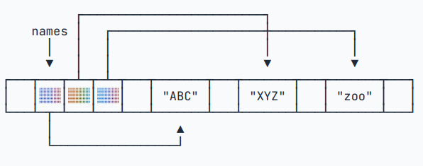

Java学习笔记（二）：引用类型与流程控制语句
声明：本篇笔记部分摘自《Java核心技术（卷Ⅰ） - 机械工业出版社》及Java教程-廖雪峰-2025-06-16，遵循CC BY 4.0协议。
存在由AI生成的小部分内容，仅供参考，请仔细甄别可能存在的错误。
一、引用类型
之前我们探索了整型、浮点型、布尔型以及字符型这几种相对简单的基本数据类型，现在我们可以在此基础上拓展出更复杂的类型了，虽然初看起来比较复杂繁琐，但是掌握熟练后会有很大的帮助。
在Java中，引用类型是一种数据类型，它并不直接持有对象本身的值，而是持有对象的内存地址（引用）。我们操作一个引用类型的变量时，实际上是通过这个地址在间接地操作堆内存中的对象。
这与基本数据类型（Primitive Types）形成鲜明对比，基本类型（如 int, double, char, boolean 等）的变量直接存储了它们的值。
1.字符串
Java字符串就是Unicode字符序列。如字符串"Java\u2122"由“J、a、v、a、”这五个字符（TM商标算作一个字符）组成。String标准类库中提供的这个预定义类被很自然地称作了String。每个用双引号括起来的字符串都是String类的一个实例。
① 子串
类似于Python中对列表的“切片”操作，Java也定义了对字符串截取一部分子串的方法 substring()：
1 | |
该方法接收两个参数，范围为[a, b)；下标从0开始。
② 拼接
Java中可以很方便地使用加号 + 来直接拼接两个字符串：
1 | |
不同于Python在试图直接拼接字符与其他类型时会报告 TypeError，Java在拼接字符串时会自动将它们转换成String类型。
如果希望用一个间隔符将很多个字符串（特别是字符串数组）连接起来，可以使用join方法：
1 | |
在Python中可以将乘号 * 应用于字符串实现重复输出，如print("Ha" * 3)会打印出HaHaHa。对于Java来说，我们可以通过System.out.println("Ha".repeat(3));来实现重复多次输出一个字符串。
③ 字符串是不可变的
对于一个已经定义的字符串String greeting = "Hello"，直接通过替换后面几个字母将其改为"Help!"是难以办到的，通常的做法是将这个字符串重新赋值。这样一来，可以认为字符串中的单个字符是不可以独立修改的，也就是说字符串是不可变的（immutable）。
在C/C++中经常认为字符串是字符型的数组，但是在Java中应当将其视为一个 char* 指针。
类似于Python而不同于C/C++，Java字符串更像是一个对象而不是字符数组，通过一个length字段明确地记录了字符串的长度，因此无需在字符串的末尾隐式地添加一个\0截止符。这一点在熟悉C/C++后学习Java程序设计时需要特别注意。
④ 字符串相同的判断方法
在C++中，String类重载了==运算符的逻辑，从而让我们能够方便地像比较数值一样去判断两字符串是否相同。但在Java中，由于String类采取的是指针式的策略（引用类型），使用==只能够判断符号两端的字符串或者字面量是否指向同一个内存地址。但绝大多数情况下都会出现两个相同的字符串存储在不同地址上的情况，这样就会使得在Java中使用==来比较字符串出现奇奇怪怪的bug，甚至某些情况下这种bug还是间歇性的，复现和排查起来相对困难，是一种很糟糕的情况。
为了在Java中判断两个字符串或者字面量是否相同，我们可以使用equals()方法。例如我们有一个字符串String greeting = "Hello!"，我们可以使用greeting.equals("Hello!")来检查它的内容，该方法会返回一个表示是否相等的布尔值。只需要检查字符相同忽略大小写的情况下，可以使用equalsIgnoreCase()这个方法。
⑤ 空串与Null串
“空串”即空的字符串，指的是长度为0的字符串。它也是Java对象，有自己的串长度（0）和内容（空）。有两种检查办法：
1 | |
String类型的变量还可以存储一个特殊值null，表示没有对象与该变量关联。这时可以使用if (str != null)来排除对null串调用一些方法从而引发异常的可能性。
⑥ 码点与代码单元
Java字符串是一个char值序列。前面提到char这种数据类型采用UTF-16编码表示Unicode码点的一个代码单元；常用的Unicode字符可以使用一个代码单元表示，而一些辅助字符需要一对代码单元。在UTF-16编码中，一个代码单元固定为2字节（16位），这与Java的 char 类型完全一致。以下是一些相关的方法：
| 方法 | 描述 |
|---|---|
| str.length() | 返回字符串的长度（UTF_16编码下需要的代码单元个数） |
| str.codePointCount(a, b) | 返回字符串的[a, b)子串的实际长度 |
| s.charAt(n) | 返回位置n的代码单元 |
| str.CodePointAt(n) | 返回位置n的码点 |
备注：
- 对于方法
str.codePointCount(a, b)，如果想要查看字符串的总实际长度，可以使用参数(0, str.length())。 - 不要辅助字符使用
str.charAt(n)方法，这些字符由于使用两个代码单元表示，只会得到代码单元的前一半或后一半。
对于字符串 "我喜欢喝🍺"，其中的 🍺 是UTF-16编码为 U+1F37A 的一个emoj表情，形状是一杯啤酒。以下是对这个字符串使用这些方法的例子：
1 | |
或许大家会对上面例子中“🍺”这个奇怪的字符感到疑惑（实际上想打出来这个字符也挺麻烦的，需要切换到微软的中文输入法，然后输入关键词“啤酒”才能打出来）：

但这些使用字符表示的emoj在表情包流行以前，甚至是现在仍然收到很多用户的欢迎，很多用户都经常用来在发送的消息中更形象地表达自己的情感，甚至有人拿来做软件的图标（见下图）：

有关emoj的更多信息，可以参考这个视频：【emoji】原来才是这个互联网的唯一顶流… – 哔哩哔哩
扯远了😂String类还有很多实用的方法，由于使用频率和文章篇幅这里就省略了，需要的时候再查询API文档或者直接询问AI即可。
⑦ 字符串的构建
如果经常需要向一个字符串添加内容，实现类似于Python中对列表的append方法一样给一个字符串补充新内容，可以使用StringBuilder类,同样使用append方法来添加新内容到字符串中：
1 | |
类似地，Java中还有一个StringBuffer类，它的API与StringBuilder类似，虽然效率略低，但是允许多线程构建字符串。（虽然说多线程大多数情况下也用不上，使用StringBuilder就足够了）
⑧ 文本块
类似Python的多行字符串，Java可以使用"""定义一个多行的文本块，这里一笔带过。
2.数组
① 定义一个数组
1 | |
定义一个数组类型的变量，使用 类型[] 数组名 = new 类型[长度]。数组变量初始化必须使用 new int[5] 表示创建一个可容纳5个 int 元素的数组。也可以写成 int[] ns = new int[] { 68, 79, 91, 85, 62 };，在定义的同时进行初始化操作，编译器会自动推算数组长度。
Java的数组有几个特点：
- 数组所有元素初始化为默认值，整型都是
0，浮点型是0.0，布尔型是false； - 数组一旦创建后，大小就不可改变。
- 与
String类相同，数组也是引用类型，不可以修改长度。
② 数组元素的访问与修改
要访问数组中的某一个元素，需要使用索引。同样，数组索引从 0 开始，n 个元素的数组，索引范围是 0 ~ n-1 。使用赋值语句修改数组元素，例如 ns[1] = 79。可以用 数组变量.length 获取数组大小。
1 | |
这时有同学就要问了，“不是说数组长度不能修改吗？”注意这里数组是引用类型，第二句的 ns = new int[] { 1, 2, 3 }; 会让 ns 指向一个新的数组，如下图所示：

（还好Java有垃圾回收的处理机制，会在检测到之前的数组无用之后自动清理掉，避免了内存泄漏的发生…）
③ 数组的打印
细心的同学会发现，上例中输出数组元素时使用了 Arrays.toString(ns) 的写法，可以直接 System.out.println(ns)吗？
（要你说，能用我还费劲巴拉引入java.util.Arrays干啥）
试试看吧，实际上输出了 [I@5caf905d 这样明显不是给人看的玩意~~（你要说能看得懂那我佩服你），这是表示字符串数组的 （那这又是为什么呢）~~。想要实现类似于Python那样，以很人性化的方式查看数组的各个元素，需要这样写：Class 名，@ 后面的是十六进制的 hashCode。这是因为数组虽然没有显式定义成一个类，但它的确是一个对象，继承了祖先类 Object 的所有方法
1 | |
（对比一下Python s = [1, 2, 3]、print(s) 简单两行搞定，深刻体会到了“人生苦短，我用Python”这句话多对了…）
④ 元素也是引用类型的情况
来看这样一个数组：
1 | |
发现数组中的元素也是引用类型的，它们实际上也是一层指针类似的概念。Java是如何处理这样的数组的呢？
这里就有点像真正意义上的指针了，对于String类型的数组，它的每一个元素都指向某个字符串对象，而不是直接存储这些字符串对象。看图的话估计更好理解：

此时对 names[1] 赋值，也只会把 names[1] 指向另一个字符串，原来的被自动回收掉，再也无法访问到了。
再看下面这段代码，运行结果是什么呢？
1 | |
输出的结果：s="XYZ", names_2[1]="cat"。虽然后面修改了 names[1]，但在这之前 s 已经指向了 "XYZ" 或者说拷贝了 names[1] 中"XYZ" 的地址，即使后面修改了 names[1]，也只是指向了另外一个字符串 "cat"，之前的 XYZ 仍然存在，并且因为已经关联了 x，不是无用的资源也就不会被回收掉。
⑤ 数组的遍历
有时需要逐个读取数组的元素来进行统计或替换等处理，通常使用 for 循环来进行遍历：
1 | |
⑥ 数组排序
手搓冒泡排序
1 | |
冒泡排序的原理是，每次都将前 n 个数中的最大值"冒泡"到最右边，然后忽略这个最大值，然后再找前 n-1 个数中的最大值冒泡到之前最大值的左边；以此类推，最后就形成了从小到大的有序列表。
Array.sort方法
Java的标准库已经内置了排序功能，我们只需要调用JDK提供的 Arrays.sort() 就可以排序
1 | |
此方法会改变数组的内容，而不是返回一个临时的结果；即排序后数组中各元素指向的地址会变化。Arrays.sort() 方法会对字符串数组按照首字母 a ~ z 排序。
⑦ 二维数组
1 | |
想要人性化地优雅地输出二维数组，可以使用二重循环或者 Arrays.deepToString() 方法：
1 | |
二、流程控制语句
1.格式化输出
Java同样支持C/C++中的 printf() 方法,使用占位符 % 实现格式化输出：
1 | |
| 占位符 | 说明 |
|---|---|
%d |
格式化输出整数 |
%x |
格式化输出十六进制整数 |
%f |
格式化输出浮点数 |
%e |
格式化输出科学计数法表示的浮点数 |
%s |
格式化字符串 |
%% |
表示普通的%符号 |
一些比较复杂的格式控制，如 %02d、%-3f 与C/C++中的定义基本相同，此处省略。
2.用户输入
C语言中使用scanf()方法接收输入，C++中使用cin >>输入流；而在Java中略微麻烦一些，需要引入Scanner类，并创建一个Scanner对象。
- 使用
scanner.nextLine()读取用户输入的字符串 - 使用
scanner.nextInt()读取用户输入的整数 - 使用
scanner.nextDouble()读取用户输入的双精度小数
Scanner 会自动转换数据类型，不必手动转换。
1 | |
3.if语句
if语句的写法与C/C++一致，这里不多赘述，记得引用类型(String等)不能使用 a == b 比较，要使用 a.equals(b) 即可。
1 | |
4.Swith语句
① switch语句概述
学过C语系编程语言的同学都应该很熟悉switch-case这一套了。直接上语法：
1 | |
若要为多个分支定义相同的操作，可以使用这样的语法：
1 | |
- 传统
switch是语句：它控制程序的流程，但不产生一个最终的值。只能在里面执行操作（比如给变量赋值、调用方法）。 - 新的
switch是表达式：它最终会计算出一个结果值，因此可以直接用在赋值操作符=的右边。这让代码更紧凑、更函数式。
如果 switch () 中的“条件”（专业术语为“操作数”）是 null，则会触发一个 NullPointerException。
② switch + 枚举
Switch语句可以很好地与枚举类型搭配使用：
1 | |
③ yeild关键字
有时我们不但希望switch语句返回一个值，还能输出一些消息，实现比较复杂的处理，可以使用 yeild 关键字返回一个值，作为switch语句的返回值。
1 | |
5.while循环
略
1 | |
6.do-while循环
略，此循环先进行后判断，因此至少会执行一次。
1 | |
7.for循环
经典语法：
1 | |
for-each循环：
1 | |
和for循环相比，for each 循环的变量 n 不再是计数器，而是直接对应到数组的每个元素。for each 循环的写法也更简洁。但是，for each 循环无法指定遍历顺序，也无法获取数组的索引。
8. break和continue、goto
与C/C++相同，Java中的 break 关键字可以用来跳出当前的循环（立即中断循环，跳过此轮循环剩余操作，直接跳出循环进入下面的逻辑）；continue 关键字用于跳过这一次循环（立即中断循环，继续进行下一轮循环）。
相当于在流水线上打螺丝，
break表示到点下班直接撂挑子不干，骑小电驴回家；continue表示打到一半发现这螺丝是次品，把这一个丢了继续打下一个螺丝…
虽然 goto 语句被认为是一个不好的设计，会让代码的流程变得非常复杂（像面条一样搅在一起）；因此Java中去掉了这一个关键字。但是这样 设计一个标志，在需要的时候让程序回到这个标志处向下执行的逻辑 是很有用的，比如说一次性跳出多重循环。好在Java提供了带标签的break和continue来实现类似的控制流功能：
1 | |
上例中通过 outerLoop: 定义了一个标志（注意用冒号结束，不是分号）；然后通过 break outerloop; 终止循环并且跳转到标志处，当然也可以写 continue outerloop 就是了。
不过虽然这样做很爽，也还是要谨记代码简洁性和易读性的原则，要么让跳转语句和标志之间不要有太长的逻辑；要么添加上比较详细的注释说明，防止协作开发的时候同事对着咱写的代码素质飙升礼貌问候…
参考资料
- 廖雪峰的官方网站.Java教程[EB/OL].(2025-06-07)[2025-08-21]. https://www.cnblogs.com/echolun/p/12709761.html ↩